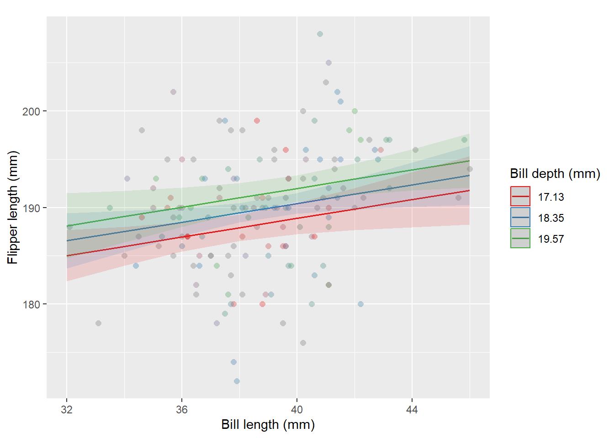

flowchart LR A(P1) --> B(TT) B --> C(EE) C --> D(P2)
General linear models


Overview
This document demonstrates the application of general linear models, with a focus on multiple regression. It utilizes the penguins dataset from the palmerpenguins R package, which contains measurements of penguin species from the Palmer Archipelago. The dataset was originally introduced by Gorman et al. (2014).

Question
Can bill length and bill depth alone effectively predict flipper length in Adélie penguins?
The goal is to test whether the variables bill_length_mm and bill_depth_mm are effective predictors of flipper_length_mm for the Adélie penguins. These variables are defined as follows:
-
bill_length_mm: Numerical value representing bill length in millimeters. -
bill_depth_mm: Numerical value representing bill depth in millimeters. -
flipper_length_mm: Integer value representing flipper length in millimeters

We could also include other predictors, such as sex, island, and flipper_length_mm, but this would complicate the visualizations. Since the primary aim here is educational, we will focus on bill_length_mm and bill_depth_mm for now.
Hypothesis
To approach this question will use Popper’s hypothetico-deductive method, originally known as the method of conjecture and refutation (Popper, 1979, p. 164). The schema (in its simplest form) goes like this:
“Here \(\text{P}_1\), is the problem from which we start, \(\text{TT}\) (the ‘tentative theory’) is the imaginative conjectural solution which we first reach, for example our first tentative interpretation. \(\text{EE}\) (‘error- elimination’) consists of a severe critical examination of our conjecture, our tentative interpretation: it consists, for example, of the critical use of documentary evidence and, if we have at this early stage more than one conjecture at our disposal, it will also consist of a critical discussion and comparative evaluation of the competing conjectures. \(\text{P}_2\) is the problem situation as it emerges from our first critical attempt to solve our problems. It leads up to our second attempt (and so on).” (Popper, 1979, p. 164)
Let’s consider as our tentative theory the following:
The predictors bill_length_mm and bill_depth_mm effectively predict flipper_length_mm.
We will test this by evaluating the following hypotheses:
\[ \begin{cases} \text{H}_{0}: \text{The predictors are not effective} \\ \text{H}_{a}: \text{The predictors are effective} \end{cases} \]
Let’s define what we mean by effective predictors as follows:
- Predictors must have a statistically significant effect on the response variable.
- The model should meet all validity assumptions.
- The amount of variance explained by the predictors (\(\text{R}^{2}_{\text{adj}}\)) must be substantial, defined as greater than 0.5.
This 50% threshold is not arbitrary. It represents the reported average level of variance explained in response variables during observational field studies in ecology, particularly when there is little to no control over factors influencing variance (Peek et al., 2003).
Finally, our test can be systematized as follows:
\[ \begin{cases} \text{H}_{0}: \text{R}^{2}_{\text{adj}} \leq 0.5 \\ \text{H}_{a}: \text{R}^{2}_{\text{adj}} > 0.5 \end{cases} \] Beyond a \(\text{R}^{2}_{\text{adj}}\) over 0.5, predictor effects must be statistically significant, and model assumptions should be met.
Here we are assessing predictive power, not causality, so an effect size measure (like Cohen’s \(f^{2}\)) isn’t required.
Predictive models alone should never be used to establish causal relationships (Arif & MacNeil, 2022).
Methods
To address our hypothesis and research question, we will employ a general linear model with multiple regression analysis, sourcing data from the Palmer Penguins dataset, which includes measurements from Adélie penguins. The response variable is flipper_length_mm (flipper length in mm), and the predictor variables are bill_length_mm and bill_depth_mm.
We set the significance level (\(\alpha\)) at 0.05, allowing a 5% chance of a Type I error. Assumption checks will include assessing the normality of residuals through visual inspections like Q-Q plots and statistical tests such as the Shapiro-Wilk test. Homoscedasticity will be evaluated using tests like the Breusch-Pagan test to ensure constant variance of residuals across predictor levels.
Multicollinearity will be assessed by calculating variance inflation factors (VIF), with a VIF above 10 indicating potential issues. We will also consider influential points by employing Cook’s distance and leverage values to identify any points that might unduly affect the model outcomes.
Model evaluation will focus on the adjusted R-squared to determine the proportion of variance in flipper_length_mm explained by the predictors, considering the number of predictors. We will also assess the statistical significance of each predictor through p-values.
An overview of general linear models
Before proceeding, let’s briefly overview general linear models, with a focus on multiple regression analysis.
“[…] A problem of this type is called a problem of multiple linear regression because we are considering the regression of \(Y\) on \(k\) variables \(X_{1}, \dots, X_{k}\), rather than on just a single variable \(X\), and we are assuming also that this regression is a linear function of the parameters \(\beta_{0}, \dots, \beta_{k}\). In a problem of multiple linear regressions, we obtain \(n\) vectors of observations (\(x_{i1}. \dots, x_{ik}, Y_{i}\)), for \(i = 1, \dots, n\). Here \(x_{ij}\) is the observed value of the variable \(X_{j}\) for the \(i\)th observation. The \(E(Y)\) is given by the relation
\[ E(Y_{i}) = \beta_{0} + \beta_{1} x_{i1} + \dots + \beta_{k} x_{ik} \]
(DeGroot & Schervish, 2012, p. 738)
Definitions
- Residuals/Fitted values
- For \(i = 1, \dots, n\), the observed values of \(\hat{y} = \hat{\beta}_{0} + \hat{\beta}_{1} x_{i}\) are called fitted values. For \(i = 1, \dots, n\), the observed values of \(e_{i} = y_{i} - \hat{y}_{i}\) are called residuals (DeGroot & Schervish, 2012, p. 717).
“[…] regression problems in which the observations \(Y_{i}, \dots, Y_{n}\) […] we shall assume that each observation \(Y_{i}\) has a normal distribution, that the observations \(Y_{1}, \dots, Y_{n}\) are independent, and that the observations \(Y_{1}, \dots, Y_{n}\) have the same variance \(\sigma^{2}\). Instead of a single predictor being associated with each \(Y_{i}\), we assume that a \(p\)-dimensional vector \(z_{i} = (z_{i0}, \dots, z_{ip - 1})\) is associated with each \(Y_{i}\)” (DeGroot & Schervish, 2012, p. 736).
- General linear model
- The statistical model in which the observations \(Y_{1}, \dots, Y_{n}\) satisfy the following assumptions (DeGroot & Schervish, 2012, p. 738).
Assumptions
- Assumption 1
- Predictor is known. Either the vectors \(z_{1}, \dots , z_{n}\) are known ahead of time, or they are the observed values of random vectors \(Z_{1}, \dots , Z_{n}\) on whose values we condition before computing the joint distribution of (\(Y_{1}, \dots , Y_{n}\)) (DeGroot & Schervish, 2012, p. 736).
- Assumption 2
- Normality. For \(i = 1, \dots, n\), the conditional distribution of \(Y_{i}\) given the vectors \(z_{1}, \dots , z_{n}\) is a normal distribution (DeGroot & Schervish, 2012, p. 737).
(Normality of the error term distribution (Hair, 2019, p. 287))
- Assumption 3
- Linear mean. There is a vector of parameters \(\beta = (\beta_{0}, \dots, \beta_{p - 1})\) such that the conditional mean of \(Y_{i}\) given the values \(z_{1}, \dots , z_{n}\) has the form
\[ z_{i0} \beta_{0} + z_{i1} \beta_{1} + \cdots + z_{ip - 1} \beta_{p - 1} \]
for \(i = 1, \dots, n\) (DeGroot & Schervish, 2012, p. 737).
(Linearity of the phenomenon measured (Hair, 2019, p. 287))
- Assumption 4
- Common variance (homoscedasticity). There is as parameter \(\sigma^{2}\) such the conditional variance of \(Y_{i}\) given the values \(z_{1}, \dots , z_{n}\) is \(\sigma^{2}\) for \(i = 1, \dots\, n\).
(Constant variance of the error terms (Hair, 2019, p. 287))
- Assumption 5
- Independence. The random variables \(Y_{1}, \dots , Y_{n}\) are independent given the observed \(z_{1}, \dots , z_{n}\) (DeGroot & Schervish, 2012, p. 737).
(Independence of the error terms (Hair, 2019, p. 287))
Setting up the environment
Code
library(broom)
library(car)
library(checkmate)
library(cowplot)
library(dplyr)
library(fBasics)
library(forecast)
library(ggeffects)
library(GGally)
library(ggplot2)
library(ggpmisc)
library(ggplotify)
library(qqplotr)
library(ggPredict)
library(glue)
library(insight)
library(janitor)
library(latex2exp)
library(magrittr)
library(moments)
library(nortest)
library(olsrr)
library(palmerpenguins)
library(parsnip)
library(performance)
library(predict3d)
library(recipes)
library(report)
library(rgl)
library(rutils)
library(sandwich)
library(stats)
library(stringr)
library(tidyr)
library(tseries)
library(viridis)
library(workflows)Code
# SeeL https://stackoverflow.com/a/64579266/8258804
get_elements_1 <- function(x, element) {
checkmate::assert_string(element)
if (is.list(x)) {
if (element %in% names(x)) {
x[[element]]
} else {
lapply(x, get_elements_1, element = element)
}
}
}Code
# SeeL https://stackoverflow.com/a/64579266/8258804
get_elements_2 <- function(x, pattern) {
checkmate::assert_string(pattern)
if (is.list(x)) {
for (i in x) {
if (is.character(i)) {
if (any(stringr::str_detect(i, pattern), na.rm = TRUE)) {
return(x)
}
}
}
lapply(x, get_elements, pattern = pattern)
}
}Code
lm_fun <- function(model, fix_all_but = NULL, data = NULL) {
checkmate::assert_class(model, "lm")
checkmate::assert_number(
fix_all_but,
lower = 1,
upper = length(stats::coef(model)) - 1,
null.ok = TRUE
)
coef <- broom::tidy(fit)
vars <- letters[seq_len((nrow(coef) - 1))]
fixed_vars <- vars
if (!is.null(fix_all_but)) {
checkmate::assert_data_frame(data)
checkmate::assert_subset(coef$term[-1], names(data))
for (i in seq_along(fixed_vars)[-fix_all_but]) {
fixed_vars[i] <- mean(data[[coef$term[i + 1]]], na.rm = TRUE)
}
vars <- vars[fix_all_but]
}
fun_exp <- str2expression(
glue::glue(
"function({paste0(vars, collapse = ', ')}) {{", "\n",
" {paste0('checkmate::assert_numeric(', vars, ')', collapse = '\n')}",
"\n\n",
" {coef$estimate[1]} +",
"{paste0(coef$estimate[-1], ' * ', fixed_vars, collapse = ' + ')}",
"\n",
"}}"
)
)
out <- eval(fun_exp)
out
}Code
lm_str_fun <- function(
model,
digits = 3,
latex2exp = TRUE,
fix_all_but = NULL, # Ignore the intercept coefficient.
fix_fun = "Mean",
coef_names = NULL # Ignore the intercept coefficient.
) {
checkmate::assert_class(model, "lm")
checkmate::assert_number(digits)
checkmate::assert_flag(latex2exp)
checkmate::assert_number(
fix_all_but,
lower = 1,
upper = length(stats::coef(model)) - 1,
null.ok = TRUE
)
checkmate::assert_string(fix_fun)
checkmate::assert_character(
coef_names,
any.missing = FALSE,
len = length(names(stats::coef(model))) - 1,
null.ok = TRUE
)
if (is.null(coef_names)) coef_names <- names(stats::coef(model))[-1]
coef <- list()
for (i in seq_along(coef_names)) {
coef[[coef_names[i]]] <-
stats::coef(model) |>
magrittr::extract(i + 1) |>
rutils:::clear_names() |>
round(digits)
}
coef_names <-
coef_names |>
stringr::str_replace_all("\\_|\\.", " ") |>
stringr::str_to_title() |>
stringr::str_replace(" ", "")
if (!is.null(fix_all_but)) {
for (i in seq_along(coef_names)[-fix_all_but]) {
coef_names[i] <- paste0(fix_fun, "(", coef_names[i], ")")
}
}
out <- paste0(
"$", "y =", " ",
round(stats::coef(model)[1], digits), " + ",
paste0(coef, " \\times ", coef_names, collapse = " + "),
"$"
)
out <- out |> stringr::str_replace("\\+ \\-", "\\- ")
if (isTRUE(latex2exp)) {
out |>latex2exp::TeX()
} else {
out
}
}Code
test_outlier <- function(
x,
method = "iqr",
iqr_mult = 1.5,
sd_mult = 3
) {
checkmate::assert_numeric(x)
checkmate::assert_choice(method, c("iqr", "sd"))
checkmate::assert_number(iqr_mult)
checkmate::assert_number(sd_mult)
if (method == "iqr") {
iqr <- stats::IQR(x, na.rm = TRUE)
min <- stats::quantile(x, 0.25, na.rm = TRUE) - (iqr_mult * iqr)
max <- stats::quantile(x, 0.75, na.rm = TRUE) + (iqr_mult * iqr)
} else if (method == "sd") {
min <- mean(x, na.rm = TRUE) - (sd_mult * stats::sd(x, na.rm = TRUE))
max <- mean(x, na.rm = TRUE) + (sd_mult * stats::sd(x, na.rm = TRUE))
}
dplyr::if_else(x >= min & x <= max, FALSE, TRUE, missing = FALSE)
}Code
remove_outliers <- function(
x,
method = "iqr",
iqr_mult = 1.5,
sd_mult = 3
) {
checkmate::assert_numeric(x)
checkmate::assert_choice(method, c("iqr", "sd"))
checkmate::assert_number(iqr_mult, lower = 1)
checkmate::assert_number(sd_mult, lower = 0)
x |>
test_outlier(
method = method,
iqr_mult = iqr_mult,
sd_mult = sd_mult
) %>%
`!`() %>%
magrittr::extract(x, .)
}Code
list_as_tibble <- function(list) {
checkmate::assert_list(list)
list |>
dplyr::as_tibble() |>
dplyr::mutate(
dplyr::across(
.cols = dplyr::everything(),
.fns = as.character
)
) |>
tidyr::pivot_longer(cols = dplyr::everything())
}Code
stats_sum <- function(
x,
name = NULL,
na_rm = TRUE,
remove_outliers = FALSE,
iqr_mult = 1.5,
as_list = FALSE
) {
checkmate::assert_numeric(x)
checkmate::assert_string(name, null.ok = TRUE)
checkmate::assert_flag(na_rm)
checkmate::assert_flag(remove_outliers)
checkmate::assert_number(iqr_mult, lower = 1)
checkmate::assert_flag(as_list)
if (isTRUE(remove_outliers)) {
x <- x |> remove_outliers(method = "iqr", iqr_mult = iqr_mult)
}
out <- list(
n = length(x),
n_rm_na = length(x[!is.na(x)]),
n_na = length(x[is.na(x)]),
mean = mean(x, na.rm = na_rm),
var = stats::var(x, na.rm = na_rm),
sd = stats::sd(x, na.rm = na_rm),
min = rutils:::clear_names(stats::quantile(x, 0, na.rm = na_rm)),
q_1 = rutils:::clear_names(stats::quantile(x, 0.25, na.rm = na_rm)),
median = rutils:::clear_names(stats::quantile(x, 0.5, na.rm = na_rm)),
q_3 = rutils:::clear_names(stats::quantile(x, 0.75, na.rm = na_rm)),
max = rutils:::clear_names(stats::quantile(x, 1, na.rm = na_rm)),
iqr = IQR(x, na.rm = na_rm),
skewness = moments::skewness(x, na.rm = na_rm),
kurtosis = moments::kurtosis(x, na.rm = na_rm)
)
if (!is.null(name)) out <- append(out, list(name = name), after = 0)
if (isTRUE(as_list)) {
out
} else {
out |> list_as_tibble()
}
}Code
plot_qq <- function(
x,
text_size = NULL,
na_rm = TRUE,
print = TRUE
) {
checkmate::assert_numeric(x)
checkmate::assert_number(text_size, null.ok = TRUE)
checkmate::assert_flag(na_rm)
checkmate::assert_flag(print)
if (isTRUE(na_rm)) x <- x |> rutils:::drop_na()
plot <-
dplyr::tibble(y = x) |>
ggplot2::ggplot(ggplot2::aes(sample = y)) +
ggplot2::stat_qq() +
ggplot2::stat_qq_line(color = "red", linewidth = 1) +
ggplot2::labs(
x = "Theoretical quantiles (Std. normal)",
y = "Sample quantiles"
) +
ggplot2::theme(text = ggplot2::element_text(size = text_size))
if (isTRUE(print)) print(plot)
invisible(plot)
}Code
plot_hist <- function(
x,
name = "x",
bins = 30,
stat = "density",
text_size = NULL,
density_line = TRUE,
na_rm = TRUE,
print = TRUE
) {
checkmate::assert_numeric(x)
checkmate::assert_string(name)
checkmate::assert_number(bins, lower = 1)
checkmate::assert_choice(stat, c("count", "density"))
checkmate::assert_number(text_size, null.ok = TRUE)
checkmate::assert_flag(density_line)
checkmate::assert_flag(na_rm)
checkmate::assert_flag(print)
if (isTRUE(na_rm)) x <- x |> rutils:::drop_na()
y_lab <- ifelse(stat == "count", "Frequency", "Density")
plot <-
dplyr::tibble(y = x) |>
ggplot2::ggplot(ggplot2::aes(x = y)) +
ggplot2::geom_histogram(
ggplot2::aes(y = ggplot2::after_stat(!!as.symbol(stat))),
bins = 30,
color = "white"
) +
ggplot2::labs(x = name, y = y_lab) +
ggplot2::theme(text = ggplot2::element_text(size = text_size))
if (stat == "density" && isTRUE(density_line)) {
plot <- plot + ggplot2::geom_density(color = "red", linewidth = 1)
}
if (isTRUE(print)) print(plot)
invisible(plot)
}Code
plot_ggally <- function(
data,
cols = names(data),
mapping = NULL,
axis_labels = "none",
na_rm = TRUE,
text_size = NULL
) {
checkmate::assert_tibble(data)
checkmate::assert_character(cols)
checkmate::assert_subset(cols, names(data))
checkmate::assert_class(mapping, "uneval", null.ok = TRUE)
checkmate::assert_choice(axis_labels, c("show", "internal", "none"))
checkmate::assert_flag(na_rm)
checkmate::assert_number(text_size, null.ok = TRUE)
out <-
data|>
dplyr::select(dplyr::all_of(cols))|>
dplyr::mutate(
dplyr::across(
.cols = dplyr::where(hms::is_hms),
.fns = ~ midday_trigger(.x)
),
dplyr::across(
.cols = dplyr::where(
~ !is.character(.x) && !is.factor(.x) && !is.numeric(.x)
),
.fns = ~ as.numeric(.x)
)
)
if (isTRUE(na_rm)) out <- out|> tidyr::drop_na(dplyr::all_of(cols))
if (is.null(mapping)) {
plot <-
out|>
GGally::ggpairs(
lower = list(continuous = "smooth"),
axisLabels = axis_labels
)
} else {
plot <-
out|>
GGally::ggpairs(
mapping = mapping,
axisLabels = axis_labels
) +
viridis::scale_color_viridis(
begin = 0.25,
end = 0.75,
discrete = TRUE,
option = "viridis"
) +
viridis::scale_fill_viridis(
begin = 0.25,
end = 0.75,
discrete = TRUE,
option = "viridis"
)
}
plot <-
plot +
ggplot2::theme(text = ggplot2::element_text(size = text_size))
print(plot)
invisible(plot)
}Code
test_normality <- function(x,
name = "x",
remove_outliers = FALSE,
iqr_mult = 1.5,
log_transform = FALSE,
density_line = TRUE,
text_size = NULL,
print = TRUE) {
checkmate::assert_numeric(x)
checkmate::assert_string(name)
checkmate::assert_flag(remove_outliers)
checkmate::assert_number(iqr_mult, lower = 1)
checkmate::assert_flag(log_transform)
checkmate::assert_flag(density_line)
checkmate::assert_number(text_size, null.ok = TRUE)
checkmate::assert_flag(print)
n <- x |> length()
n_rm_na <- x |> rutils:::drop_na() |> length()
if (isTRUE(remove_outliers)) {
x <- x |> remove_outliers(method = "iqr", iqr_mult = iqr_mult)
}
if (isTRUE(log_transform)) {
x <-
x |>
log() |>
drop_inf()
}
if (n_rm_na >= 7) {
ad <- x |> nortest::ad.test()
cvm <-
x |>
nortest::cvm.test() |>
rutils:::shush()
} else {
ad <- NULL
cmv <- NULL
}
bonett <- x |> moments::bonett.test()
# See also `Rita::DPTest()` (just for Omnibus (K) tests).
dagostino <-
x |>
fBasics::dagoTest() |>
rutils:::shush()
jarque_bera <-
rutils:::drop_na(x) |>
tseries::jarque.bera.test()
if (n_rm_na >= 4) {
lillie_ks <- x |> nortest::lillie.test()
} else {
lillie_ks <- NULL
}
pearson <- x |> nortest::pearson.test()
if (n_rm_na >= 5 && n_rm_na <= 5000) {
sf <- x |> nortest::sf.test()
} else {
sf <- NULL
}
if (n_rm_na >= 3 && n_rm_na <= 3000) {
shapiro <- x |> stats::shapiro.test()
} else {
shapiro <- NULL
}
qq_plot <- x |> plot_qq(text_size = text_size, print = FALSE)
hist_plot <-
x |>
plot_hist(
name = name,
text_size = text_size,
density_line = density_line,
print = FALSE
)
grid_plot <- cowplot::plot_grid(hist_plot, qq_plot, ncol = 2, nrow = 1)
out <- list(
stats = stats_sum(
x,
name = name,
na_rm = TRUE,
remove_outliers = FALSE,
as_list = TRUE
),
params = list(
name = name,
remove_outliers = remove_outliers,
log_transform = log_transform,
density_line = density_line
),
ad = ad,
bonett = bonett,
cvm = cvm,
dagostino = dagostino,
jarque_bera = jarque_bera,
lillie_ks = lillie_ks,
pearson = pearson,
sf = sf,
shapiro = shapiro,
hist_plot = hist_plot,
qq_plot = qq_plot,
grid_plot = grid_plot
)
if (isTRUE(print)) print(grid_plot)
invisible(out)
}Code
normality_sum <- function(
x,
round = FALSE,
digits = 5,
only_p_value = FALSE,
...
) {
checkmate::assert_numeric(x)
checkmate::assert_flag(round)
checkmate::assert_number(digits)
checkmate::assert_flag(only_p_value)
stats <- test_normality(x, print = FALSE, ...)
out <- dplyr::tibble(
test = c(
"Anderson-Darling",
"Bonett-Seier",
"Cramér-von Mises",
"D'Agostino Omnibus Test",
"D'Agostino Skewness Test",
"D'Agostino Kurtosis Test",
"Jarque–Bera",
"Lilliefors (K-S)",
"Pearson chi-square",
"Shapiro-Francia",
"Shapiro-Wilk"
),
statistic_1 = c(
stats$ad$statistic,
stats$bonett$statistic[1],
stats$cvm$statistic,
attr(stats$dagostino, "test")$statistic[1],
attr(stats$dagostino, "test")$statistic[2],
attr(stats$dagostino, "test")$statistic[3],
stats$jarque_bera$statistic,
stats$lillie_ks$statistic,
stats$pearson$statistic,
ifelse(is.null(stats$shapiro), NA, stats$shapiro$statistic),
ifelse(is.null(stats$sf), NA, stats$sf$statistic)
),
statistic_2 = c(
as.numeric(NA),
stats$bonett$statistic[2],
as.numeric(NA),
as.numeric(NA),
as.numeric(NA),
as.numeric(NA),
stats$jarque_bera$parameter,
as.numeric(NA),
as.numeric(NA),
as.numeric(NA),
as.numeric(NA)
),
p_value = c(
stats$ad$p.value,
stats$bonett$p.value,
stats$cvm$p.value,
attr(stats$dagostino, "test")$p.value[1],
attr(stats$dagostino, "test")$p.value[2],
attr(stats$dagostino, "test")$p.value[3],
stats$jarque_bera$p.value,
stats$lillie_ks$p.value,
stats$pearson$p.value,
ifelse(is.null(stats$shapiro), NA, stats$shapiro$p.value),
ifelse(is.null(stats$sf), NA, stats$sf$p.value)
)
)
if (isTRUE(only_p_value)) out <- out |> dplyr::select(test, p_value)
if (isTRUE(round)) {
out |>
dplyr::mutate(
dplyr::across(
.cols = dplyr::where(is.numeric),
.fns = ~ round(.x, digits)
))
} else {
out
}
}Preparing the data
Assumption 1 is satisfied, as the predictors are known.
Code
dataCode
report::report(data)
#> The data contains 151 observations of the following 3 variables:
#>
#> - bill_length_mm: n = 151, Mean = 38.79, SD = 2.66, Median = 38.80, MAD =
#> 2.97, range: [32.10, 46], Skewness = 0.16, Kurtosis = -0.16, 0% missing
#> - bill_depth_mm: n = 151, Mean = 18.35, SD = 1.22, Median = 18.40, MAD =
#> 1.19, range: [15.50, 21.50], Skewness = 0.32, Kurtosis = -0.06, 0% missing
#> - flipper_length_mm: n = 151, Mean = 189.95, SD = 6.54, Median = 190.00, MAD
#> = 7.41, range: [172, 210], Skewness = 0.09, Kurtosis = 0.33, 0% missingChecking variable distributions
The data show fairly normal distributions. It seems that the bill_length_mm and bill_depth_mm variables appear slightly skewed, while the flipper_length_mm variable is more symmetric.
Code
data |>
dplyr::pull(bill_length_mm) |>
stats_sum(name = "Bill length (mm)")bill_length_mm variable.
Code
data |>
dplyr::pull(bill_length_mm) |>
test_normality(name = "Bill length (mm)")
#> Registered S3 method overwritten by 'quantmod':
#> method from
#> as.zoo.data.frame zoobill_length_mm variable with a kernel density estimate, along with a quantile-quantile (Q-Q) plot between the variable and the theoretical quantiles of the normal distribution.
Code
data |>
dplyr::pull(bill_depth_mm) |>
stats_sum(name = "Bill depth (mm)")bill_depth_mm variable.
Code
data |>
dplyr::pull(bill_depth_mm) |>
test_normality(name = "Bill depth (mm)")bill_depth_mm variable with a kernel density estimate, along with a quantile-quantile (Q-Q) plot between the variable and the theoretical quantiles of the normal distribution.
Code
data |>
dplyr::pull(flipper_length_mm) |>
stats_sum(name = "Flipper length (mm)")flipper_length_mm variable.
Code
data |>
dplyr::pull(flipper_length_mm) |>
test_normality(name = "Flipper length (mm)")flipper_length_mm variable with a kernel density estimate, along with a quantile-quantile (Q-Q) plot between the variable and the theoretical quantiles of the normal distribution.
Checking correlations
Both bill_length_mm and bill_depth_mm are positively correlated with flipper_length_mm in a significant manner. No non-linear relationships are observed.
Code
data |> plot_ggally() |> rutils:::shush()bill_length_mm, bill_depth_mm, and flipper_length_mm variables.
Checking for outliers
A few minor outliers are present in the bill_length_mm and flipper_length_mm variables. We could remove these outliers, but they are not extreme and do not appear to be errors.
A few observations were flagged with Cook’s D values greater than the threshold. One of them (129) was particularly influential, so it was removed from the dataset.
Boxplots
Code
colors <- gg_color_hue(3)Code
data |>
tidyr::pivot_longer(-flipper_length_mm) |>
ggplot2::ggplot(ggplot2::aes(x = name, y = value, fill = name)) +
ggplot2::geom_boxplot(
outlier.colour = "red",
outlier.shape = 1,
width = 0.75
) +
ggplot2::geom_jitter(width = 0.3, alpha = 0.1, color = "black", size = 0.5) +
ggplot2::labs(x = "Variable", y = "Value", fill = ggplot2::element_blank()) +
ggplot2::scale_fill_manual(
labels = c("Bill length (mm)", "Bill depth (mm)"),
breaks = c("bill_length_mm", "bill_depth_mm"),
values = gg_color_hue(3)[1:2]
) +
ggplot2::coord_flip() +
ggplot2::theme(
axis.title.y = ggplot2::element_blank(),
axis.text.y = ggplot2::element_blank(),
axis.ticks.y = ggplot2::element_blank()
)bill_length_mm and bill_depth_mm variables, with outliers highlighted in red and other data indicated by jittered points.
Code
data |>
tidyr::pivot_longer(flipper_length_mm) |>
ggplot2::ggplot(ggplot2::aes(x = name, y = value, fill = name)) +
ggplot2::geom_boxplot(
outlier.colour = "red",
outlier.shape = 1,
width = 0.5
) +
ggplot2::geom_jitter(width = 0.2, alpha = 0.1, color = "black", size = 0.5) +
ggplot2::scale_fill_manual(
labels = "Flipper length (mm)",
values = gg_color_hue(3) |> dplyr::last()
) +
ggplot2::labs(x = "Variable", y = "Value", fill = ggplot2::element_blank()) +
ggplot2::coord_flip() +
ggplot2::theme(
axis.title.y = ggplot2::element_blank(),
axis.text.y = ggplot2::element_blank(),
axis.ticks.y = ggplot2::element_blank()
)flipper_length_mm variable, with outliers highlighted in red and other data indicated by jittered points.
Cook’s D
Cook’s D measures each observation’s influence on the model’s fitted values. It is considered one of the most representative metrics for assessing overall influence. A common practice is to flag observations with a Cook’s distance of 1.0 or greater. However, a more conservative threshold of \(4 / (n - k - 1)\), where \(n\) is the sample size and \(k\) is the number of independent variables, is suggested as a more conservative measure in small samples or for use with larger datasets. (Hair, 2019)
Learn more about Cook’s D in: Cook (1977); Cook (1979).
Code
cooks_d_cut_off <- 4 / (nrow(data) - 2 - 1)
cooks_d_cut_off
#> [1] 0.02702703Code
form <- formula(flipper_length_mm ~ bill_length_mm + bill_depth_mm)Code
fit <- lm(form, data = data)Code
cooks_obs <-
fit |>
stats::cooks.distance() %>%
magrittr::is_greater_than(cooks_d_cut_off) |>
which() |>
`names<-`(NULL)
fit |>
stats::cooks.distance() |>
magrittr::extract(cooks_obs)
#> 14 90 122 129
#> 0.05229124 0.02997213 0.03644541 0.12296893Code
plot <- fit |> olsrr::ols_plot_cooksd_bar(print_plot = FALSE)
q <- plot$plot + ggplot2::labs(title = ggplot2::element_blank())
q <- q |> ggplot2::ggplot_build()
q$data[[5]]$label <- ""
q |> ggplot2::ggplot_gtable() |> ggplotify::as.ggplot()Outlier removal
Code
data <- data |> dplyr::slice(-129)Fitting the model
Code
recipe <-
data |>
recipes::recipe(form) |>
rutils:::shush()Code
model <-
parsnip::linear_reg() |>
parsnip::set_engine("lm") |>
parsnip::set_mode("regression")Code
workflow <-
workflows::workflow() |>
workflows::add_recipe(recipe) |>
workflows::add_model(model)Code
fit <- workflow |> parsnip::fit(data)Code
fit |>
broom::tidy() |>
janitor::adorn_rounding(5)Code
fit |>
broom::augment(data) |>
janitor::adorn_rounding(5)Code
fit |>
broom::glance() |>
tidyr::pivot_longer(cols = dplyr::everything()) |>
janitor::adorn_rounding(10)Code
fit_engine <- fit |> parsnip::extract_fit_engine()
fit_engine |> summary()
#>
#> Call:
#> stats::lm(formula = ..y ~ ., data = data)
#>
#> Residuals:
#> Min 1Q Median 3Q Max
#> -17.7249 -3.1509 -0.0638 3.7849 16.4935
#>
#> Coefficients:
#> Estimate Std. Error t value Pr(>|t|)
#> (Intercept) 147.8358 8.6512 17.088 < 0.0000000000000002 ***
#> bill_length_mm 0.4832 0.2013 2.401 0.01760 *
#> bill_depth_mm 1.2674 0.4348 2.915 0.00411 **
#> ---
#> Signif. codes: 0 '***' 0.001 '**' 0.01 '*' 0.05 '.' 0.1 ' ' 1
#>
#> Residual standard error: 5.934 on 147 degrees of freedom
#> Multiple R-squared: 0.1387, Adjusted R-squared: 0.127
#> F-statistic: 11.84 on 2 and 147 DF, p-value: 0.00001711Code
# A jerry-rigged solution to fix issues related to modeling using the pipe.
# fit_2 <- fit
#
# fit_2$fit$fit$fit$call <- call(
# "lm",
# flipper_length_mm ~ bill_length_mm + bill_depth_mm,
# data = quote("data")
# )
#
# fit_engine_2 <- fit_2 |> parsnip::extract_fit_engine()
fit_engine_2 <- lm(form, data = data)Code
report::report(fit_engine_2)
#> We fitted a linear model (estimated using OLS) to predict flipper_length_mm
#> with bill_length_mm and bill_depth_mm (formula: flipper_length_mm ~
#> bill_length_mm + bill_depth_mm). The model explains a statistically
#> significant and moderate proportion of variance (R2 = 0.14, F(2, 147) =
#> 11.84, p < .001, adj. R2 = 0.13). The model's intercept, corresponding to
#> bill_length_mm = 0 and bill_depth_mm = 0, is at 147.84 (95% CI [130.74,
#> 164.93], t(147) = 17.09, p < .001). Within this model:
#>
#> - The effect of bill length mm is statistically significant and positive
#> (beta = 0.48, 95% CI [0.09, 0.88], t(147) = 2.40, p = 0.018; Std. beta =
#> 0.20, 95% CI [0.04, 0.37])
#> - The effect of bill depth mm is statistically significant and positive
#> (beta = 1.27, 95% CI [0.41, 2.13], t(147) = 2.92, p = 0.004; Std. beta =
#> 0.24, 95% CI [0.08, 0.41])
#>
#> Standardized parameters were obtained by fitting the model on a standardized
#> version of the dataset. 95% Confidence Intervals (CIs) and p-values were
#> computed using a Wald t-distribution approximation.Inspecting the model fit
General model
In a multiple linear regression with two predictors, the model is fit by adjusting a plane to the data points.
Code
user_matrix <-
dplyr::tribble(
~a, ~b, ~c, ~d,
0.6233152, -0.7817951, -0.01657271, 0,
0.1739255, 0.1179437, 0.97767037, 0,
-0.7623830, -0.6122792, 0.20949011, 0,
0, 0, 0, 1
) |>
as.matrix() |>
`colnames<-`(NULL)
fit_engine |>
predict3d::predict3d(
xlab = "Bill length (mm)",
ylab = "Bill depth (mm)",
zlab = "Flipper length (mm)",
radius = 0.75,
type = "s",
color = "red",
show.subtitle = FALSE,
show.error = FALSE
)
rgl::view3d(userMatrix = user_matrix, zoom = 0.9)
rgl::rglwidget(elementId = "1st") |> rutils:::shush()Code
limits <-
stats::predict(fit_engine, interval = "prediction") |>
dplyr::as_tibble() |>
rutils:::shush()
fit |>
broom::augment(data) |>
dplyr::bind_cols(limits) |>
ggplot2::ggplot(ggplot2::aes(flipper_length_mm, .pred)) +
# ggplot2::geom_ribbon(
# mapping = ggplot2::aes(ymin = lwr, ymax = upr),
# alpha = 0.2
# ) +
ggplot2::geom_ribbon(
mapping = ggplot2::aes(
ymin = stats::predict(stats::loess(lwr ~ flipper_length_mm)),
ymax = stats::predict(stats::loess(upr ~ flipper_length_mm)),
),
alpha = 0.2
) +
ggplot2::geom_smooth(
mapping = ggplot2::aes(y = lwr),
se = FALSE,
method = "loess",
formula = y ~ x,
linetype = "dashed",
size = 0.2,
color = "black"
) +
ggplot2::geom_smooth(
mapping = ggplot2::aes(y = upr),
se = FALSE,
method = "loess",
formula = y ~ x,
linetype = "dashed",
size = 0.2,
color = "black"
) +
ggplot2::geom_point() +
ggplot2::geom_abline(intercept = 0, slope = 1, color = "red") +
ggplot2::labs(
x = "Observed",
y = "Predicted",
subtitle = latex2exp::TeX(
paste0(
lm_str_fun(fit_engine, digits = 3, latex2exp = FALSE), " | ",
"$R^{2} = ", round(broom::glance(fit)$r.squared, 3), "$ | ",
"$R^{2}_{adj} = ", round(broom::glance(fit)$adj.r.squared, 3), "$"
)
)
)
#> Warning: Using `size` aesthetic for lines was deprecated in ggplot2 3.4.0.
#> ℹ Please use `linewidth` instead.Adjusted predictions
If we keep all predictors fixed except one, we can observe the regression line between that independent variable and the dependent variable. Here, we present different visualizations of the fitted model. This is important for understanding how each predictor is associated with the outcome.
Code
fit |>
broom::augment(data) |>
ggplot2::ggplot(ggplot2::aes(bill_length_mm, flipper_length_mm)) +
ggplot2::geom_point() +
ggplot2::geom_line(
ggplot2::aes(y = .pred, color = "Prediction"),
linewidth = 0.5,
alpha = 0.5
) +
ggplot2::geom_function(
ggplot2::aes(y = .pred, color = "Adjusted prediction"),
fun = lm_fun(fit_engine, fix_all_but = 1, data = data),
linewidth = 1
) +
ggplot2::labs(
x = "Bill length (mm)",
y = "Flipper length (mm)",
subtitle = lm_str_fun(fit_engine, fix_all_but = 1),
color = ggplot2::element_blank()
) +
ggplot2::scale_color_manual(
values = c("Prediction" = "blue", "Adjusted prediction" = "red")
)flipper_length_mm) and one of the independent variables (bill_length_mm). The adjusted prediction is calculated by holding the bill_depth_mm variable constant at its mean value.
Code
fit |>
broom::augment(data) |>
ggplot2::ggplot(ggplot2::aes(bill_depth_mm, flipper_length_mm)) +
ggplot2::geom_point() +
ggplot2::geom_line(
ggplot2::aes(y = .pred, color = "Prediction"),
linewidth = 0.5,
alpha = 0.5
) +
ggplot2::geom_function(
ggplot2::aes(y = .pred, color = "Adjusted prediction"),
fun = lm_fun(fit_engine, fix_all_but = 2, data = data),
linewidth = 1
) +
ggplot2::labs(
x = "Bill depth (mm)",
y = "Flipper length (mm)",
subtitle = lm_str_fun(fit_engine, fix_all_but = 2),
color = ggplot2::element_blank()
) +
ggplot2::scale_color_manual(
values = c("Prediction" = "blue", "Adjusted prediction" = "red")
)flipper_length_mm) and one of the independent variables (bill_depth_mm). The adjusted prediction is calculated by holding the bill_depth_mm variable constant at its mean value.
Code
fit_engine_2 |>
ggeffects::predict_response(
terms = c("bill_length_mm", "bill_depth_mm")
) |>
plot(show_data = TRUE, verbose = FALSE) +
ggplot2::labs(
title = ggplot2::element_blank(),
x = "Bill length (mm)",
y = "Flipper length (mm)",
color = "Bill depth (mm)"
) +
ggplot2::theme_gray()
flipper_length_mm and bill_length_mm, with data points represented as dots. The three lines show model predictions for different values of the variable bill_depth_mm, with the shaded areas representing confidence intervals.
Posterior predictive checks
Posterior predictive checks are a technique used in Bayesian statistics to assess the fit of a model by comparing observed data to data simulated from the posterior predictive distribution. The model-predicted lines should resemble the observed data line.
Code
diag_sum_plots <-
fit_engine_2 |>
performance::check_model(panel = FALSE) |>
plot() |>
rutils:::shush()
plot <-
diag_sum_plots$PP_CHECK +
ggplot2::labs(
title = ggplot2::element_blank(),
subtitle = ggplot2::element_blank()
) +
ggplot2::theme_gray()
plot <- plot |> ggplot2::ggplot_build()
for (i in c(1)) {
# "#1b6ca8" "#3aaf85"
plot$data[[i]]$colour <- dplyr::case_when(
plot$data[[i]]$colour == "#3aaf85" ~ "red",
plot$data[[i]]$colour == "#1b6ca8" ~ "blue",
plot$data[[i]]$colour == "darkgray" ~ "black",
TRUE ~ plot$data[[i]]$colour
)
}
plot |> ggplot2::ggplot_gtable() |> ggplotify::as.ggplot()Performing model diagnostics
Normality
Assumption 2 is satisfied, as the residuals shown a normal distribution in 11 types of normality tests with different approaches (e.g., moments, regression/correlations; ECDFs).
Visual inspection
Code
fit_engine |>
stats::residuals() |>
test_normality(name = "Residuals")Code
fit |>
broom::augment(data) |>
dplyr::select(.resid) |>
tidyr::pivot_longer(.resid) |>
ggplot2::ggplot(ggplot2::aes(x = name, y = value, fill = name)) +
ggplot2::geom_boxplot(
outlier.colour = "red",
outlier.shape = 1,
width = 0.5
) +
ggplot2::geom_jitter(width = 0.2, alpha = 0.1, color = "black", size = 0.5) +
ggplot2::scale_fill_manual(
labels = "Residuals",
values = gg_color_hue(1)
) +
ggplot2::labs(x = "Variable", y = "Value", fill = ggplot2::element_blank()) +
ggplot2::coord_flip() +
ggplot2::theme(
axis.title.y = ggplot2::element_blank(),
axis.text.y = ggplot2::element_blank(),
axis.ticks.y = ggplot2::element_blank()
)
Code
fit_engine |>
stats::residuals() |>
stats_sum(name = "Residuals")Tests
It’s important to note that the Kolmogorov-Smirnov and Pearson chi-square tests are included here just for reference, as many authors don’t recommend using them when testing for normality (D’Agostino & Belanger, 1990). Learn more about normality tests in Thode (2002).
We also recommend checking the original papers for each test to understand their assumptions and limitations:
- Anderson-Darling test: Anderson & Darling (1952); Anderson & Darling (1954).
- Bonett-Seier test: Bonett & Seier (2002).
- Cramér-von Mises test: Cramér (1928); Anderson (1962).
- D’Agostino test: D’Agostino (1971); D’Agostino & Pearson (1973).
- Jarque–Bera test: Jarque & Bera (1980); Bera & Jarque (1981); Jarque & Bera (1987).
- Lilliefors (K-S) test: Smirnov (1948); Kolmogorov (1933); Massey (1951); Lilliefors (1967); Dallal & Wilkinson (1986).
- Pearson chi-square test: Pearson (1900).
- Shapiro-Francia test: Shapiro & Francia (1972).
- Shapiro-Wilk test: Shapiro & Wilk (1965).
\[ \begin{cases} \text{H}_{0}: \text{Normality} \\ \text{H}_{a}: \text{Nonnormality} \end{cases} \]
Code
fit_engine |>
stats::residuals() |>
normality_sum()Correlation between observed residuals and expected residuals under normality.
fit_engine |> olsrr::ols_test_correlation()
#> [1] 0.9952751Linearity
Assumption 3 is satisfied, as the relationship between the variables is fairly linear.
Code
fit |>
broom::augment(data) |>
ggplot2::ggplot(ggplot2::aes(.pred, .resid)) +
ggplot2::geom_point() +
ggplot2::geom_hline(
yintercept = 0,
color = "black",
linewidth = 0.5,
linetype = "dashed"
) +
ggplot2::geom_smooth(formula = y ~ x, method = "loess", color = "red") +
ggplot2::labs(x = "Fitted values", y = "Residuals")Code
plots <- fit_engine |> olsrr::ols_plot_resid_fit_spread(print_plot = FALSE)
for (i in seq_along(plots)) {
q <- plots[[i]] + ggplot2::labs(title = ggplot2::element_blank())
q <- q |> ggplot2::ggplot_build()
q$data[[1]]$colour <- "red"
q$plot$layers[[1]]$constructor$color <- "red"
plots[[i]] <- q |> ggplot2::ggplot_gtable() |> ggplotify::as.ggplot()
}
cowplot::plot_grid(plots$fm_plot, plots$rsd_plot, ncol = 2, nrow = 1)Ramsey’s RESET test indicates that the model may has no omitted variables. This test examines whether non-linear combinations of the fitted values can explain the response variable.
Learn more about the Ramsey’s RESET test in: Ramsey (1969).
\[ \begin{cases} \text{H}_{0}: \text{The model has no omitted variables} \\ \text{H}_{a}: \text{The model has omitted variables} \end{cases} \]
Code
fit_engine |> lmtest::resettest(power = 2:3)
#>
#> RESET test
#>
#> data: fit_engine
#> RESET = 1.2564, df1 = 2, df2 = 145, p-value = 0.2878Code
fit_engine |> lmtest::resettest(type = "regressor")
#>
#> RESET test
#>
#> data: fit_engine
#> RESET = 1.0705, df1 = 4, df2 = 143, p-value = 0.3734Homoscedasticity (common variance)
Assumption 4 is satisfied, as the residuals exhibit constant variance. While some heteroscedasticity is present, the Breusch-Pagan test (not studentized) indicate that it is not severe.
When comparing the standardized residuals (\(\sqrt{|\text{Standardized Residuals}|}\)) spread to the fitted values and each predictor, we can observe that the residuals are fairly constant across the range of values. This suggests that the residuals have a constant variance.
Visual inspection
Code
fit |>
stats::predict(data) |>
dplyr::mutate(
.sd_resid =
fit_engine |>
stats::rstandard() |>
abs() |>
sqrt()
) |>
ggplot2::ggplot(ggplot2::aes(.pred, .sd_resid)) +
ggplot2::geom_point() +
ggplot2::geom_smooth(formula = y ~ x, method = "loess", color = "red") +
ggplot2::labs(
x = "Fitted values",
y = latex2exp::TeX("$\\sqrt{|Standardized \\ Residuals|}$")
)
Code
fit |>
stats::predict(data) |>
dplyr::mutate(
.sd_resid =
fit_engine |>
stats::rstandard() |>
abs() |>
sqrt()
) |>
dplyr::bind_cols(data) |>
ggplot2::ggplot(ggplot2::aes(bill_length_mm, .sd_resid)) +
ggplot2::geom_point() +
ggplot2::geom_smooth(formula = y ~ x, method = "loess", color = "red") +
ggplot2::labs(
x = "Bill length (mm)",
y = latex2exp::TeX("$\\sqrt{|Standardized \\ Residuals|}$")
)bill_length_mm and the model standardized residuals.
Code
fit |>
stats::predict(data) |>
dplyr::mutate(
.sd_resid =
fit_engine |>
stats::rstandard() |>
abs() |>
sqrt()
) |>
dplyr::bind_cols(data) |>
ggplot2::ggplot(ggplot2::aes(bill_depth_mm, .sd_resid)) +
ggplot2::geom_point() +
ggplot2::geom_smooth(formula = y ~ x, method = "loess", color = "red") +
ggplot2::labs(
x = "Bill depth (mm)",
y = latex2exp::TeX("$\\sqrt{|Standardized \\ Residuals|}$")
)bill_depth_mm and the model standardized residuals.
Breusch-Pagan test
The Breusch-Pagan test test indicates that the residuals exhibit constant variance.
As we can see below, the result of the test is not significant, suggesting that the residuals have a constant variance.
Learn more about the Breusch-Pagan test in: Breusch & Pagan (1979) and Koenker (1981).
\[ \begin{cases} \text{H}_{0}: \text{The variance is constant} \\ \text{H}_{a}: \text{The variance is not constant} \end{cases} \]
Code
fit_engine_2 |> performance::check_heteroscedasticity()
#> OK: Error variance appears to be homoscedastic (p = 0.887).Code
# With studentising modification of Koenker
fit_engine |> lmtest::bptest(studentize = TRUE)
#>
#> studentized Breusch-Pagan test
#>
#> data: fit_engine
#> BP = 0.64698, df = 2, p-value = 0.7236Code
fit_engine |> lmtest::bptest(studentize = FALSE)
#>
#> Breusch-Pagan test
#>
#> data: fit_engine
#> BP = 0.75804, df = 2, p-value = 0.6845Code
# With studentising modification of Koenker
fit_engine |> skedastic::breusch_pagan(koenker = TRUE)Code
fit_engine |> skedastic::breusch_pagan(koenker = FALSE)Code
fit_engine |> olsrr::ols_test_breusch_pagan()
#>
#> Breusch Pagan Test for Heteroskedasticity
#> -----------------------------------------
#> Ho: the variance is constant
#> Ha: the variance is not constant
#>
#> Data
#> -------------------------------
#> Response : ..y
#> Variables: fitted values of ..y
#>
#> Test Summary
#> -----------------------------
#> DF = 1
#> Chi2 = 0.02002983
#> Prob > Chi2 = 0.8874538White’s test
The White’s test is a general test for heteroskedasticity. It is a generalization of the Breusch-Pagan test and is more flexible in terms of the types of heteroskedasticity it can detect. It has the same null hypothesis as the Breusch-Pagan test.
Like the Breusch-Pagan, the results of the White’s test indicate that the residuals exhibit constant variance.
Learn more about the White’s test in: White (1980).
Code
fit_engine |> skedastic::white()Independence
Assumption 5 is satisfied. Although the residuals show some autocorrelation, they fall within the acceptable range of the Durbin–Watson statistic (1.5 to 2.5). It’s also important to note that the observations for each predicted value are not related to any other prediction; in other words, they are not grouped or sequenced by any variable (by design) (see (Hair, 2019, p. 291) for more information).
Many authors don’t consider autocorrelation tests for linear regression models, as they are more relevant for time series data. However, we include them here for reference.
Visual inspection
Code
fit_engine |>
residuals() |>
forecast::ggtsdisplay(lag.max=30)
Newey-West estimator
The Newey-West estimator is a method used to estimate the covariance matrix of the coefficients in a regression model when the residuals are autocorrelated.
Learn more about the Newey-West estimator in: Newey & West (1987) and Newey & West (1994).
Code
fit_engine |> sandwich::NeweyWest()
#> (Intercept) bill_length_mm bill_depth_mm
#> (Intercept) 47.9244280 -0.35523375 -1.88169574
#> bill_length_mm -0.3552337 0.02273440 -0.02735218
#> bill_depth_mm -1.8816957 -0.02735218 0.15988029The Heteroscedasticity and autocorrelation consistent (HAC) estimation of the covariance matrix of the coefficient estimates can also be computed in other ways. The HAC estimator below is a implementation made by Zeileis (2004).
Code
fit_engine |> sandwich::vcovHAC()
#> (Intercept) bill_length_mm bill_depth_mm
#> (Intercept) 46.594526 -0.38006697 -1.74915588
#> bill_length_mm -0.380067 0.02178345 -0.02441808
#> bill_depth_mm -1.749156 -0.02441808 0.14676678Durbin-Watson test
The Durbin-Watson test is a statistical test used to detect the presence of autocorrelation at lag 1 in the residuals from a regression analysis. The test statistic ranges from 0 to 4, with a value of 2 indicating no autocorrelation. Values less than 2 indicate positive autocorrelation, while values greater than 2 indicate negative autocorrelation (Fox, 2016).
A common rule of thumb in the statistical community is that a Durbin-Watson statistic between 1.5 and 2.5 suggests little to no autocorrelation.
Learn more about the Durbin-Watson test in: Durbin & Watson (1950); Durbin & Watson (1951); and Durbin & Watson (1971).
\[ \begin{cases} \text{H}_{0}: \text{Autocorrelation of the disturbances is 0} \\ \text{H}_{a}: \text{Autocorrelation of the disturbances is not equal to 0} \end{cases} \]
Code
fit_engine |> olsrr::ols_correlations()Code
lmtest::dwtest(fit_engine)
#>
#> Durbin-Watson test
#>
#> data: fit_engine
#> DW = 1.5744, p-value = 0.004786
#> alternative hypothesis: true autocorrelation is greater than 0Code
car::durbinWatsonTest(fit_engine)
#> lag Autocorrelation D-W Statistic p-value
#> 1 0.1951782 1.574424 0.006
#> Alternative hypothesis: rho != 0Ljung-Box test
Learn more about the Ljung-Box test in: Box & Pierce (1970) and Ljung & Box (1978).
$$ \\
\[\begin{cases} \text{H}_{0}: \text{Residuals are independently distributed} \\ \text{H}_{a}: \text{Residuals are not independently distributed} \end{cases}\]$$
Colinearity/Multicollinearity
No high degree of colinearity was observed among the independent variables.
Variance Inflation Factor (VIF)
The Variance Inflation Factor (VIF) indicates the effect of other independent variables on the standard error of a regression coefficient. The VIF is directly related to the tolerance value (\(\text{VIF}_{i} = 1/\text{TO}L\)). High VIF values (larger than ~5 (@ Struck, 2024)) suggest significant collinearity or multicollinearity among the independent variables (Hair, 2019, p. 265).
Code
diag_sum_plots <-
fit_engine_2 |>
performance::check_model(panel = FALSE) |>
plot() |>
rutils:::shush()
diag_sum_plots$VIF +
ggplot2::labs(
title = ggplot2::element_blank(),
subtitle = ggplot2::element_blank()
) +
ggplot2::theme(
legend.position = "right",
axis.title = ggplot2::element_text(size = 11, colour = "black"),
axis.text = ggplot2::element_text(colour = "gray25"),
axis.text.y = ggplot2::element_text(size = 9),
legend.text = ggplot2::element_text(colour = "black")
)
Code
fit_engine |> olsrr::ols_vif_tol()Code
fit_engine_2 |> performance::check_collinearity()Condition Index
The condition index is a measure of multicollinearity in a regression model. It is based on the eigenvalues of the correlation matrix of the predictors. A condition index of 30 or higher is generally considered indicative of significant collinearity (Belsley et al., 2004, pp. 112–114).
Code
fit_engine |> olsrr::ols_eigen_cindex()Measures of influence
Code
diag_sum_plots <-
fit_engine_2 |>
performance::check_model(panel = FALSE) |>
plot() |>
rutils:::shush()
plot <-
diag_sum_plots$OUTLIERS +
ggplot2::labs(
title = ggplot2::element_blank(),
subtitle = ggplot2::element_blank()
) +
ggplot2::theme(
legend.position = "right",
axis.title = ggplot2::element_text(size = 11, colour = "black"),
axis.text = ggplot2::element_text(colour = "gray25"),
axis.text.y = ggplot2::element_text(size = 9)
) +
ggplot2::theme_gray()
plot <- plot |> ggplot2::ggplot_build()
for (i in c(1:9)) {
# "#1b6ca8" "#3aaf85"
plot$data[[i]]$colour <- dplyr::case_when(
plot$data[[i]]$colour == "#3aaf85" ~ ifelse(i == 4, "red", "blue"),
plot$data[[i]]$colour == "#1b6ca8" ~ "black",
plot$data[[i]]$colour == "darkgray" ~ "black",
TRUE ~ plot$data[[i]]$colour
)
}
plot |> ggplot2::ggplot_gtable() |> ggplotify::as.ggplot()
Code
plot <- fit_engine |> olsrr::ols_plot_cooksd_bar(print_plot = FALSE)
q <- plot$plot + ggplot2::labs(title = ggplot2::element_blank())
q <- q |> ggplot2::ggplot_build()
q$data[[5]]$label <- ""
q |> ggplot2::ggplot_gtable() |> ggplotify::as.ggplot()Code
fit_engine |> olsrr::ols_plot_dfbetas()
Code
fit_engine |> olsrr::ols_plot_dffits()
Code
fit_engine |> olsrr::ols_plot_resid_stud()Code
fit_engine |> olsrr::ols_plot_resid_stand()Studentized Residuals vs Leverage Plot
- Leverage points
- “Type of influential observation defined by one aspect of influence termed leverage. These observations are substantially different on one or more independent variables, so that they affect the estimation of one or more regression coefficients” (Hair, 2019, p. 262).
Code
fit_engine |> olsrr::ols_plot_resid_lev()Deleted Studentized Residual vs Fitted Values Plot
Code
fit_engine |> olsrr::ols_plot_resid_stud_fit()
Code
fit_engine |> olsrr::ols_plot_hadi()
Code
fit_engine |> olsrr::ols_plot_resid_pot()
Testing the hypothesis
Let’s now come back to our initial hypothesis:
- Statement
-
The predictors
bill_length_mmandbill_depth_mmeffectively predictflipper_length_mm.
\[ \begin{cases} \text{H}_{0}: \text{R}^{2}_{\text{adj}} \leq 0.5 \\ \text{H}_{a}: \text{R}^{2}_{\text{adj}} > 0.5 \end{cases} \]
Beyond a \(\text{R}^{2}_{\text{adj}}\) over 0.5, predictor effects must be statistically significant, and model assumptions should be met.
In the sections above, we have shown that the model meets the assumptions of linearity, normality, homoscedasticity, and independence. (Model validity requirement: True)
The table below shows that the predictors bill_length_mm and bill_depth_mm are statistically significant in predicting flipper_length_mm. (Predictor significance requirement: True)
Code
fit |>
broom::tidy() |>
janitor::adorn_rounding(5)Now let’s check the adjusted \(R^{2}\) value to see if it is greater than 0.5. We can see in the table below that the adjusted \(R^{2}\) is lower than 0.5 (0.127, which means that the model does not explain more than 50% of the variance in the dependent variable. So we must reject the null hypothesis in favor of the alternative hypothesis. (Adjusted R squared requirement: False)
Code
fit |>
broom::glance() |>
tidyr::pivot_longer(cols = dplyr::everything()) |>
janitor::adorn_rounding(10)Conclusion
Following our criteria we can now answer our question:
Can bill length and bill depth alone effectively predict flipper length in Adélie penguins?
The answer is No. The model does not explain more than 50% of the variance in the dependent variable, which means that the predictors bill_length_mm and bill_depth_mm are not effective in predicting flipper_length_mm.
Notes
Before using objective assumption tests (e.g., Anderson–Darling test), it’s important to note that they may be not advisable in some contexts. In larger samples, these tests can be overly sensitive to minor deviations, while in smaller samples, they may not detect significant deviations. Additionally, they might overlook visual patterns that are not captured by a single metric. Therefore, visual assessment of diagnostic plots may be a better way (Kozak & Piepho, 2018; Schucany & Ng, 2006; Shatz, 2024). For a straightforward critique of normality tests specifically, refer to this article by Greener (2020).
I hope you like this report. If you have any questions, please feel free to ask. You can find me on GitHub.
Further reading
I recommend the following resources for further reading:
- Allen (1997)
- Bussab (1988) (pt-BR)
- Casella & Berger (2002)
- Dalpiaz (n.d.)
- DeGroot & Schervish (2012)
- Dudek (2020)
- Fox (2016)
- Hair (2019)
- Johnson & Wichern (2013)
- Kuhn & Silge (2022)
- Struck (2024)
I also highly recommend Josh Starmer’s StatQuest channel. The following videos are particularly helpful:
- Starmer, J. (Nov 18, 2022). Multiple Regression, Clearly Explained!!! [YouTube video]. https://youtu.be/EkAQAi3a4js?si=MfKPGlFcYqfFAM7j
- Starmer, J. (Nov 18, 2022). Multiple Regression in R, Step by Step!!! [YouTube video]. https://youtu.be/mno47Jn4gaU?si=oba5odJm8fjeizs0
References
Allen, M. P. (1997). Understanding regression analysis. Plenum Press.
Anderson, T. W. (1962). On the distribution of the two-sample Cramer-von Mises criterion. The Annals of Mathematical Statistics, 33(3), 1148–1159. https://doi.org/10.1214/aoms/1177704477
Anderson, T. W., & Darling, D. A. (1952). Asymptotic theory of certain "goodness of fit" criteria based on stochastic processes. The Annals of Mathematical Statistics, 23(2), 193–212. https://www.jstor.org/stable/2236446
Anderson, T. W., & Darling, D. A. (1954). A test of goodness of fit. Journal of the American Statistical Association, 49(268), 765–769. https://doi.org/10.1080/01621459.1954.10501232
Arif, S., & MacNeil, M. A. (2022). Predictive models aren’t for causal inference. Ecology Letters, 25(8), 1741–1745. https://doi.org/10.1111/ele.14033
Belsley, D. A., Kuh, E., & Welsch, R. E. (2004). Regression diagnostics: Identifying influential data and sources of collinearity. John Wiley & Sons. https://doi.org/10.1002/0471725153
Bera, A. K., & Jarque, C. M. (1981). Efficient tests for normality, homoscedasticity and serial independence of regression residuals: Monte Carlo Evidence. Economics Letters, 7(4), 313–318. https://doi.org/10.1016/0165-1765(81)90035-5
Bonett, D. G., & Seier, E. (2002). A test of normality with high uniform power. Computational Statistics & Data Analysis, 40(3), 435–445. https://doi.org/10.1016/S0167-9473(02)00074-9
Box, G. E. P., & Pierce, D. A. (1970). Distribution of residual autocorrelations in autoregressive-integrated moving average time series models. Journal of the American Statistical Association, 65(332), 1509–1526. https://doi.org/10.1080/01621459.1970.10481180
Breusch, T. S., & Pagan, A. R. (1979). A simple test for heteroscedasticity and random coefficient variation. Econometrica, 47(5), 1287–1294. https://doi.org/10.2307/1911963
Bussab, W. de O. (1988). Análise de variância e de regressão: uma introdução (2nd ed.). Atlas.
Casella, G., & Berger, R. L. (2002). Statistical inference (2nd ed.). Duxbury.
Cook, R. D. (1977). Detection of influential observation in linear regression. Technometrics, 19(1), 15–18. https://doi.org/10.1080/00401706.1977.10489493
Cook, R. D. (1979). Influential observations in linear regression. Journal of the American Statistical Association, 74(365), 169–174. https://doi.org/10.1080/01621459.1979.10481634
Cramér, H. (1928). On the composition of elementary errors: First paper: Mathematical deductions. Scandinavian Actuarial Journal, 1928(1), 13–74. https://doi.org/10.1080/03461238.1928.10416862
D’Agostino, R. B. (1971). An omnibus test of normality for moderate and large size samples. Biometrika, 58(2), 341–348. https://doi.org/10.1093/biomet/58.2.341
D’Agostino, R. B., & Belanger, A. (1990). A suggestion for using powerful and informative tests of normality. The American Statistician, 44(4), 316–321. https://doi.org/10.2307/2684359
D’Agostino, R. B., & Pearson, E. S. (1973). Tests for departure from normality. Empirical results for the distributions of b2 and √b1. Biometrika, 60(3), 613–622. https://doi.org/10.1093/biomet/60.3.613
Dallal, G. E., & Wilkinson, L. (1986). An analytic approximation to the distribution of Lilliefors’s test statistic for normality. The American Statistician, 40(4), 294–296. https://doi.org/10.1080/00031305.1986.10475419
Dalpiaz, D. (n.d.). Applied statistics with R. https://book.stat420.org/
DeGroot, M. H., & Schervish, M. J. (2012). Probability and statistics (4th ed.). Addison-Wesley.
Dudek, B. (2020). Linear models with R: Emphasis on 2-IV models: Basics of multiple regression. https://bcdudek.net/regression1/
Durbin, J., & Watson, G. S. (1950). Testing for serial correlation in least squares regression. I. Biometrika, 37(3-4), 409–428. https://doi.org/10.1093/biomet/37.3-4.409
Durbin, J., & Watson, G. S. (1951). Testing for serial correlation in least squares regression. II. Biometrika, 38(1-2), 159–178. https://doi.org/10.1093/biomet/38.1-2.159
Durbin, J., & Watson, G. S. (1971). Testing for serial correlation in least squares regression. III. Biometrika, 58(1), 1–19. https://doi.org/10.1093/biomet/58.1.1
Fox, J. (2016). Applied regression analysis and generalized linear models (3rd ed.). Sage.
Gorman, K. B., Williams, T. D., & Fraser, W. R. (2014). Ecological sexual dimorphism and environmental variability within a community of antarctic penguins (genus pygoscelis). PLOS ONE, 9(3), e90081. https://doi.org/10.1371/journal.pone.0090081
Greener, R. (2020, August 4). Stop testing for normality. Medium. https://towardsdatascience.com/stop-testing-for-normality-dba96bb73f90
Hair, J. F. (2019). Multivariate data analysis (8th ed.). Cengage.
Jarque, C. M., & Bera, A. K. (1980). Efficient tests for normality, homoscedasticity and serial independence of regression residuals. Economics Letters, 6(3), 255–259. https://doi.org/10.1016/0165-1765(80)90024-5
Jarque, C. M., & Bera, A. K. (1987). A test for normality of observations and regression residuals. International Statistical Review, 55(2), 163–172. https://doi.org/10.2307/1403192
Johnson, R., & Wichern, D. (2013). Applied multivariate statistical analysis: Pearson new international edition (6th ed.). Pearson.
Koenker, R. (1981). A note on studentizing a test for heteroscedasticity. Journal of Econometrics, 17(1), 107–112. https://doi.org/10.1016/0304-4076(81)90062-2
Kolmogorov, A. (1933). Sulla determinazione empirica di una legge di distribuzione. Giornale dell’Istituto Italiano degli Attuari, 4.
Kozak, M., & Piepho, H.-P. (2018). What’s normal anyway? Residual plots are more telling than significance tests when checking ANOVA assumptions. Journal of Agronomy and Crop Science, 204(1), 86–98. https://doi.org/10.1111/jac.12220
Kuhn, M., & Silge, J. (2022). Tidy modeling with R: A framework for modeling in the tidyverse. O’Reilly Media. https://www.tmwr.org/
Lilliefors, H. W. (1967). On the Kolmogorov-Smirnov test for normality with mean and variance unknown. Journal of the American Statistical Association, 62(318), 399–402. https://doi.org/10.1080/01621459.1967.10482916
Ljung, G. M., & Box, G. E. P. (1978). On a measure of lack of fit in time series models. Biometrika, 65(2), 297–303. https://doi.org/10.1093/biomet/65.2.297
Massey, F. J. (1951). The Kolmogorov-Smirnov test for goodness of fit. Journal of the American Statistical Association, 46(253), 68–78. https://doi.org/10.1080/01621459.1951.10500769
Newey, W. K., & West, K. D. (1987). A simple, positive semi-definite, heteroskedasticity and autocorrelation consistent covariance matrix. Econometrica, 55(3), 703–708. https://doi.org/10.2307/1913610
Newey, W. K., & West, K. D. (1994). Automatic lag selection in covariance matrix estimation. The Review of Economic Studies, 61(4), 631–653. https://doi.org/10.2307/2297912
Pearson, K. (1900). X. On the criterion that a given system of deviations from the probable in the case of a correlated system of variables is such that it can be reasonably supposed to have arisen from random sampling. The London, Edinburgh, and Dublin Philosophical Magazine and Journal of Science, 50(302), 157–175. https://doi.org/10.1080/14786440009463897
Peek, M. S., Leffler, A. J., Flint, S. D., & Ryel, R. J. (2003). How much variance is explained by ecologists? Additional perspectives. Oecologia, 137(2), 161–170. https://www.jstor.org/stable/4223745
Popper, K. R. (1979). Objective knowledge: An evolutionary approach. Oxford University Press.
Ramsey, J. B. (1969). Tests for specification errors in classical linear least-squares regression analysis. Journal of the Royal Statistical Society. Series B (Methodological), 31(2), 350–371. https://doi.org/10.1111/j.2517-6161.1969.tb00796.x
Schucany, W. R., & Ng, H. K. T. (2006). Preliminary goodness-of-fit tests for normality do not validate the one-sample Student t. Communications in Statistics - Theory and Methods, 35(12), 2275–2286. https://doi.org/10.1080/03610920600853308
Shapiro, S. S., & Francia, R. S. (1972). An approximate analysis of variance test for normality. Journal of the American Statistical Association, 67(337), 215–216. https://doi.org/10.1080/01621459.1972.10481232
Shapiro, S. S., & Wilk, M. B. (1965). An analysis of variance test for normality (complete samples)†. Biometrika, 52(3-4), 591–611. https://doi.org/10.1093/biomet/52.3-4.591
Shatz, I. (2024). Assumption-checking rather than (just) testing: The importance of visualization and effect size in statistical diagnostics. Behavior Research Methods, 56(2), 826–845. https://doi.org/10.3758/s13428-023-02072-x
Smirnov, N. (1948). Table for estimating the goodness of fit of empirical distributions. Annals of Mathematical Statistics, 19, 279–281.
Struck, J. (2024). Regression Diagnostics with R. University of Wisconsin-Madison. https://sscc.wisc.edu/sscc/pubs/RegDiag-R/
Thode, H. C. (2002). Testing for normality. Marcel Dekker.
White, H. (1980). A heteroskedasticity-consistent covariance matrix estimator and a direct test for heteroskedasticity. Econometrica, 48(4), 817–838. https://doi.org/10.2307/1912934
Zeileis, A. (2004). Econometric computing with HC and HAC covariance matrix estimators. Journal of Statistical Software, 11(10), 1–17. https://doi.org/10.18637/jss.v011.i10